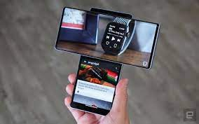
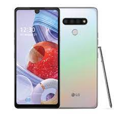
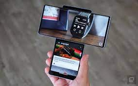
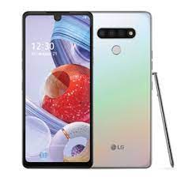
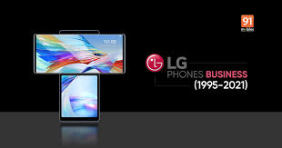
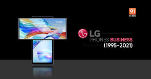
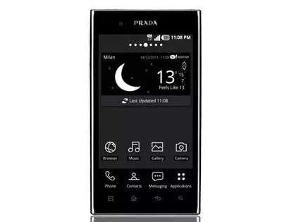
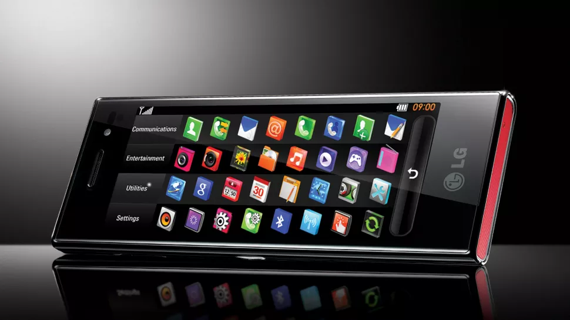

LG's efforts to keep close relationships with our customers around the world.
LG's efforts to keep close relationships with our customers around the world.
From the world’s most innovative mobile phones to high performance tablets and the freedom of LG’s smartwatches to keep you connected in style, your world is truly mobile.
In April 2021, LG officially confirmed that it will shut down its mobile division. Earlier, there had been rumours that LG considered selling its mobile division with Vingroup and Volkswagen named as potential buyers. LG Electronics used to manufacture smartphones and tablet devices. Other than the G3, LG officially unveiled the curved smartphone, G Flex, on 27 October 2013. LG released it in South Korea in November 2013 and later announced releases in Europe, the rest of Asia and North America. At Consumer Electronics Show in January 2014, LG announced a US release for the G2 across several major carriers. In 2015, LG released LG G4 globally in late May through early June. On 7 September 2016, LG unveiled the V20, and the V30 was announced on 31 August 2017. LG G6 was officially announced during MWC 2017 on 26 February 2017. The G7 ThinQ model was announced at a 2 May 2018 media briefing. LG officially launched the LG K42 on 21 September 2020, with great reviews. In April 2021, LG confirmed that the smartphone division will be officially shut down in July 2021 after months of speculation. The decision to shut down LG Mobile came about from poor sales caused by stiff competition from rival Samsung and Chinese budget brands such as Oppo and Xiaomi. LG became the first major smartphone brand to completely withdraw from the market.
 



 

In the late 1990s and early 2000s, every electronics manufacturer worth its salt was making mobile phones. Mobiles were no longer an expensive business accessory, but an essential consumer good and there were huge opportunities in a market that could accommodate many entrants.
Much of the innovation was hardware-centric and the period saw rapid technological advances such as cameras and colour displays, coupled with experimental form factors.
But the arrival of the smartphone changed everything – even stuffy BlackBerrys became desirable devices – and it was inevitable that there would be casualties.
Many of the pioneers of the first wave of mobile phones faded into obscurity or exited the market entirely. The demise of BlackBerry and Nokia were high profile symbols of this changing of the guard, but now as we enter a new era of 5G-driven hyperconnectivity, we can add LG to the list.
The South Korean electronics giant was one of the leading lights of the pre-smartphone era, capable of producing innovative, eye-catching devices. In 2006, the LG ‘Chocolate’ was a sliding phone that became a genuine fashion item, much like the iconic Motorola Razr flip phone, and was the company's best-selling mobile phone of all time.
Released the following year, the LG Prada's legacy was even greater, as it was the first ever mobile with a capactive touchscreen - showing LG was at the top of its game.
This momentum didn’t last forever but even as the industry consolidated around just two mobile platforms – iOS and Android – LG remained relevant as a manufacturer. It was even selected by Google to build its ‘Nexus 4’ handset, designed to be a white label reference model for its Android operating system in 2012. Meanwhile, its flagship ‘G’ series of handsets cemented the company’ position as a solid ‘number three’ in the marketplace.
But as the decade progressed, LG’s challenges multiplied as the market became more competitive and saturated. Samsung became increasingly synonymous with the Android platform at premium price points, while more affordable yet still feature-packed devices from Chinese vendors secured huge swathes of the mid-range segment.
At the top end of the market, only Huawei’s long-term bet appeared to be capable of challenging the Apple-Samsung duopoly before the Chinese firm ran into political difficulties, while the likes of Oppo and Xiaomi grew fast to clean up in the mid-range segment – especially in emerging markets. As these brands established credibility, LG’s heritage became less of an advantage.
LG’s most recent flagship devices also failed to make a serious impact among consumers – a far cry from the heady days of the Chocolate. Although one bright spot has been the US, where its devices have proved historically popular and where it remains number three, but its market share has hovered between 9% and 13% in recent times.
However, with a global share of just 2% and losses running into the billions, LG had come under pressure to pull the plug.
“The question during the past few months wasn’t if LG would leave the mobile business, but how. Rumours had circulated that LG was in talks with various handset manufacturers about carrying on with LG-branded smartphones,” said Ben Wood, chief of research at CCS Insight.
“But given the high value of the LG logo on other consumer electronics products and major appliances, LG’s leadership probably decided that the money offered wasn’t worth the loss of control and any potential damage to its reputation.”
Wood suggests that the global chip shortage was also a factor: “Unlike its domestic rival Samsung, LG has undoubtedly found it hard to secure stable chip supplies and other components for its smartphones. This added hassle of bringing devices to market, and doing so at a loss, is likely to have been a major factor in LG’s cut-or-continue decision. It further highlights the incredible advantages of scale: major component suppliers such as Qualcomm will cater to the likes of Apple, Samsung and Xiaomi first.”
There will be many who lament LG’s demise. Those of us who have followed the industry have fond memories of its innovation and the diversity it brought, especially when it came to design. Meanwhile, there is clearly demand in the US where Chinese vendors are mostly excluded. but these customers will likely be served by Alcatel, HMD Global’s Nokia devices or even Samsung and Apple’s cheaper devices.
The mobile phone market is much more mature and cut-throat that the one that LG first entered a few decades ago, and the opportunities for it are elsewhere. 5G networks (and 6G) will enable a whole world of new connected applications that go beyond a single device.
The demise of LG’s mobile ambitions serves as evidence of this competitiveness – and as a warning against complacency for the current leaders.
“There was a time when LG was part of an exclusive handset trinity, along with Nokia and Samsung. Now just one remains.